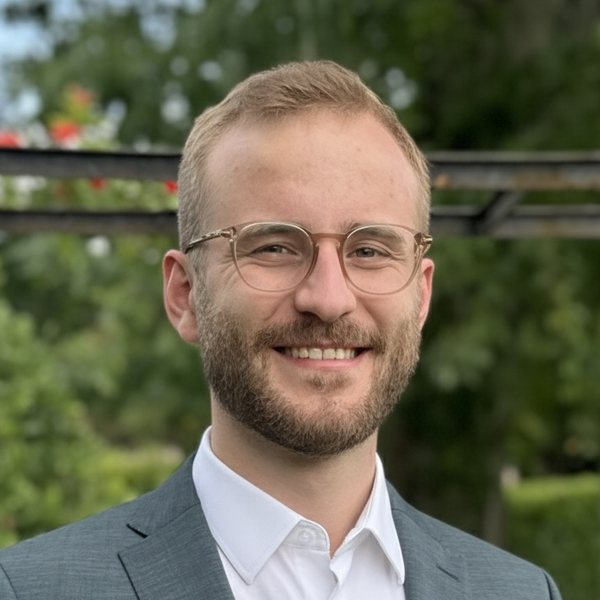

I am a PhD student in natural language processing, focusing on reasoning in large language models. Software engineering is the downstream environment I work in.
Inspired by cognitive models of human working memory, my current intuition is that models which learn (a) to actively regulate their reasoning context, rather than only appending to it, and (b) to keep that context within a fixed capacity, i.e., a per-step attention budget, may generalize better out-of-distribution.
- Reasoning
- LLMs
- Working memory
- Context compression
- Agentic memory
- Coding agents
Get in touch
I am always happy to discuss new and interesting ideas, whether from research, industry or elsewhere. Email works best; feel free to drop me a line about what you would like to discuss.
For students
If you would like to write a bachelor's or master's thesis, or propose a project along my research interests, email me with the direction you are interested in and what you would like to do. Supervision takes time, so I can only take on a limited number of students.
I want you to enjoy your project and to get the most out of it. A large part of that is learning to
manage yourself. I would therefore like to give you as much freedom as feasible and act as a sparring
partner rather than a manager.
In return, I expect you to think proactively and lead our meetings. Come with an agenda, concrete
questions and proposed next steps, and send a short summary afterwards. This does not mean I keep my
distance. I enjoy brainstorming together and will do my best to make time for coaching and guidance
when you need it.
Bring your own idea, or take one of these adjacent ideas, outside my core research:
Contemporary coding agents appear to (1) make it harder for developers to take ownership of, or build a mental model of, the code, (2) increase cognitive load by leaving them with large amounts of code to review, (3) waste time while developers wait idly for a patch, and (4) produce patches that drift from the intended solution and have to be regenerated.
For scenarios in which developers do not want to outsource cognitive ownership to AI, could an agent that takes the driver role in pair programming help? In theory, an agent that writes code at a slower pace, narrating its reasoning while the developer follows, might (1) let developers build a mental model of the code on the fly, (2) thereby make a separate review by the same developer unnecessary, (3) replace idle waiting with active involvement, or (4) even improve the agent's reasoning, since the developer could steer it at a finer granularity while the code is being written.
How would such a system have to be designed, and could it actually deliver these benefits?
Design thinking (DT) workshops produce large boards of sticky notes describing personas, their needs, the prototypes that address them, and more. These artifacts are currently not managed at scale. Insights get lost, outsiders struggle to grasp a project, and projects are hard to analyze across teams.
What if a tool gave oversight across projects and how they unfold? What if we could harness the wealth of data on stakeholder needs?
One approach would be to first develop a domain model for the artifacts created on DT whiteboards, and then classify the items on virtual whiteboards accordingly (for example, a given sticky note may belong to the class "persona" or "prototype"). These items could then be indexed in a knowledge graph that tracks how instances of each class evolve over time. Services built on top of such an index could, for instance, retrace how a given need, persona or prototype develops, show how a team moves through the design process, or answer other kinds of queries. And what would happen if we made such an interface available to an AI agent?
This idea stems from a proposal I drafted in 2023 during my master's at TUM. It did not materialize for lack of design thinking data. At HPI, more than 100 internal design thinking projects could now be made accessible via the Miro API. Although my research focus has since shifted, I would like to return to this idea. If you are an HPI student interested in pursuing it or a related direction, please get in touch.
Background
Education
- 2026 – present
- PhD, Hasso-Plattner-Institut, Potsdam
- 2021 – 2025
- M.Sc. Information Systems, Technical University of Munich
- 2017 – 2021
- B.Sc. IT-Systems Engineering, Hasso-Plattner-Institut, Potsdam
Volunteering
- 2024 – present
- Member of the Board of Governors, Cologne International School
- 2025 – present
- Technical Advisor, IEEE Intergenerational Cooperation Network, for its flagship initiative Community Climate Clubs